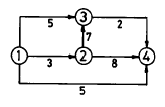
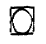
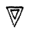
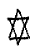
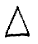
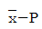
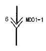

건설기계정비기능장 (2004-04-04 기출문제)
1과목: 임의 구분
1. 다음 중 평균 유효압력이 가장 높은 것은?
- 도시 평균 유효압력
- 제동 평균 유효압력
- 마찰 평균 유효압력
- 손실 평균 유효압력
(정답률: 80%)

2. 배압이 높을때 기관에 미치는 영향 중 틀린 것은?
- 소제 작용이 불량해진다.
- 발생마력이 감소한다.
- 엔진의 회전수가 빨라진다.
- 배기온도가 높아 부식을 촉진한다.
(정답률: 50%)
3. 디젤기관에서 연료의 분무형성 3대 요건에 들지 않는 것은?
- 관통력
- 무화성
- 노크
- 분포성
(정답률: 74%)
4. 디젤기관용 경유가 갖추어야 할 조건 중 맞지 않는 것은?
- 착화성이 좋을 것
- 협잡물이 없을 것
- 유황분이 많을 것
- 세탄가가 높을 것
(정답률: 70%)
5. 4행정 사이클에서 흡기밸브를 하사점을 지나서 닫는 이유는?
- 흡입 작용을 돕기 위해서
- 압축 작용을 돕기 위해서
- 크랭크 회전을 돕기 위해서
- 착화를 돕기 위해서
(정답률: 72%)
6. 정격 출력이 145ps인 건설기계의 연료소비율이 151g/ps·h을 소비하여 작업하였을 때 시간당 연료 소비량은 몇 ℓ/h인가? (단, 작업조건의 부하율은 70%이며 연료의 비중은 0.84이다.)
- 12.87ℓ/h
- 18.25ℓ/h
- 26.27ℓ/h
- 36.51ℓ/h
(정답률: 43%)
7. 실린더 지름이 60mm, 크랭크 반지름이 30mm인 가솔린기관에서 압축비를 11로 하면 연소실 체적은 약 몇 cc 인가?
- 15
- 16
- 17
- 18
(정답률: 22%)
8. 피스톤 링 1개당 실린더 안에서의 마찰력을 0.25Kg이라고 할 때 피스톤 1개당 3개의 링이 설치된 6실린더 엔진의 피스톤 평균속도가 0.3m/sec일 때 피스톤 링의 마찰로 인한 엔진의 손실마력은 얼마인가?
- 0.01Ps
- 0.9Ps
- 0.018Ps
- 1.5Ps
(정답률: 50%)
9. 디젤기관의 루트과급기(Roots supercharger) 형상이 아닌 것은?
- 2엽(2葉:two lobe) 직선형
- 3엽(3葉:three lobe) 직선형
- 나선형
- 비틀림형
(정답률: 59%)
10. 냉각수의 온도가 상승하면 케이스 안에 들어 있는 물질이 팽창하여 합성고무 막이 압축되어 이에 따라 실린더가 스프링을 누르고 내려가 밸브가 열려서 냉각수를 흐르게 하는 수온조절기는?
- 페릿 형(pellet type)
- 벨로우즈 형(bellows type)
- 밸런싱 형(balancing type)
- 부르돈 관 형(bourdon tube type)
(정답률: 75%)
11. 터보챠저가 장착된 디젤기관에서 고도보상장치의 작동시 발생되는 현상이 아닌 것은?
- 증가된 공기로 인해 연소효율이 좋아진다.
- 연료소비가 증가하므로 출력이 증가한다.
- 연료의 경제성을 개선하고 매연량을 감소시킨다.
- 모든 고도상태에서 일정한 기관출력과 효율을 유지한다.
(정답률: 69%)
12. 엔진오일의 냉각기구에 대한 설명이다. 부적절한 것은?
- 오일팬의 오일은 주행풍에 의해서도 냉각된다.
- 공랭식 기관에서는 오일냉각기를 이용한다.
- 수냉식 기관에서는 열교환기를 이용한다.
- 디젤기관에서는 증발기를 이용한다.
(정답률: 67%)
13. 디젤기관 연료분사계 전자제어 시스템에서 분사시기제어 기능을 설명하였다. 틀린 것은?
- 고온 때 분사시기 제어
- 기본 분사시기 제어
- 시동 때 분사시기 제어
- 저온 때 분사시기 제어
(정답률: 30%)
14. 건설기계 기관에서 실린더 부식에 대한 설명으로 옳지 않은 것은?
- 운전중의 열이나 블로바이 가스에 의하여 부식이 일어난다.
- 연료의 산화생성물에 의하여 일어난다.
- 부식을 방지하려면 산화방지제의 첨가가 효과적이다.
- 여름철의 기온이 높은 경우는 주로 수분에 의하여 발생되기 쉽다.
(정답률: 58%)
15. 샘플링 검사의 목적으로서 틀린 것은?
- 검사비용 절감
- 생산공정상의 문제점 해결
- 품질향상의 자극
- 나쁜 품질인 로트의 불합격
(정답률: 40%)
16. 월 100대의 제품을 생산하는데 세이퍼 1대의 제품 1대당 소요공수가 14.4 H 라 한다. 1일 8 H, 월 25일, 가동한다고 할 때 이 제품 전부를 만드는데 필요한 세이퍼의 필요대수를 계산하면? (단,작업자 가동율 80 %, 세이퍼 가동율 90 % 이다.)
- 8대
- 9대
- 10대
- 11대
(정답률: 40%)
17. 다음의 PERT/CPM에서 주공정(Critical path)은? (단, 화살표 밑의 숫자는 활동시간을 나타낸다.)

- ① - ③ - ② - ④
- ① - ② - ③ - ④
- ① - ② - ④
- ① - ④
(정답률: 69%)
18. 제품공정분석표에 사용되는 기호 중 공정간의 정체를 나타내는 기호는?




(정답률: 63%)
19. T Q C (Total Quality Control)란?
- 시스템적 사고방법을 사용하지 않는 품질관리 기법이다.
- 아프터 서비스를 통한 품질을 보증하는 방법이다.
- 전사적인 품질정보의 교환으로 품질향상을 기도하는 기법이다.
- QC부의 정보분석 결과를 생산부에 피드백하는 것이다.
(정답률: 54%)
20. 계수값 관리도는 어느 것인가?
- R관리도
 관리도
관리도- P관리도

관리도
(정답률: 39%)
2과목: 임의 구분
21. 건설기계 종감속 장치에서 일반적으로 피니언과 링기어의 백래시는?
- 1.3 ~ 1.8mm
- 0.13 ~ 0.18mm
- 3.0 ~ 4.0mm
- 5.0 ~ 6.0mm
(정답률: 62%)
22. 유체 클러치의 특성으로 맞는 것은?
- 속도비가 0 이상일 때 효율이 최고가 된다.
- 속도비가 작을 수록 효율이 높다.
- 속도비가 0 일 때 회전력이 가장 크다.
- 속도비가 클 수록 회전력이 크게 된다.
(정답률: 58%)
23. 덤프트럭의 안쪽바퀴 조향각 35°, 바깥쪽바퀴 조향각 30°, 앞뒤 축거리가 2.5m, 바퀴 접지면과 킹핀과의 거리가 0.3m 일때 최소 회전반경은 몇 m 인가?
- 4.3
- 6.3
- 5.3
- 7.3
(정답률: 44%)
24. 죠크래셔(jaw crusher)의 투입구 크기 규격표시는?
- 죠간의 최대거리(mm) × 쇄석판의 폭(mm)
- 죠간의 최대폭(mm) × 쇄석판의 길이(mm)
- 시간당 생산량
- 중량
(정답률: 56%)
25. 휠 구동식 건설기계에서 동력이 전달되는 일반적인 순서를 바르게 설명한 것은?
- 기관 → 클러치 → 변속기 → 추진축 → 차동장치 → 후차축
- 클러치 → 기관 → 변속기 → 차동장치 → 후 차축
- 기관 → 클러치 → 차동장치 → 변속기→ 추진축 → 후차축
- 기관 → 클러치 → 변속기 → 후 차축 → 추진축 → 차동장치
(정답률: 59%)
26. 유압식 모터그레이터의 고장원인이 잘못 설명된 것은?
- 작동유의 유압이 상승하지 않는다. : 작동유 점도가 지나치게 높다.
- 주행 중 전륜이 흔들린다. : 리닝실린더에 공기혼입
- 써클이 회전하지 않는다. : 시어핀의 절단
- 조향핸들이 무겁다. : 토인이 맞지 않는다.
(정답률: 60%)
27. 불도저의 트랙 조정방법(기계식) 중 틀린 것은?
- 트랙조정 고정 스크류를 늦춘다.
- 렌치로 트랙조정 스크류를 좌우로 돌린다.
- 상부 1번 롤러 트랙링크 상부에 바아를 끼워 들어 올린다.
- 트랙링크와 롤러 사이가 38∼50mm가 되게 조정한다.
(정답률: 58%)
28. 유성기어 장치의 브레이크 밴드와 클러치 작동이 급격히 작용되는 것을 방지하는 것은?
- 첵밸브
- 릴리프밸브
- 어큐뮬레이터
- 스로틀밸브
(정답률: 47%)
29. 유체클러치에서 와류를 감소시키는 것은?
- 베인
- 커플링케이스
- 가이드링
- 클러치
(정답률: 64%)
30. 압축공기 계통이 아닌 것은?
- 공기 압축기
- 제동 작용기
- 공기 탱크
- 압력 조정기
(정답률: 42%)
31. 유압식 굴삭기의 스윙모터(Swing Motor)가 구동은 되나 토크(Torgue)가 불량하다. 그 원인이 아닌 것은?
- 모터 습동부의 마모 또는 열화
- 모터 하우징 내의 압력강하 및 오일누유
- 회로 내 릴리프 밸브(Relief valve)의 설정압력 불량
- 오일 내에 다량의 공기가 유입되어 있다.
(정답률: 19%)
32. 불도저의 블레이드(삽날)가 상승하지 않거나 올라가는 힘이 약할때의 원인으로서 부적당한 것은?
- 유압실린더의 내부누설
- 컨트롤밸브 스풀의 고착
- 흡입필터의 막힘
- 밸런스밸브의 불량
(정답률: 72%)
33. 작업장치가 주행 선회할 때 힘이 약한 원인과 거리가 먼 것은?
- 릴리프 밸브의 설정압 저하
- 오일 클램프의 이상 마모
- 작동유량의 부족
- 흡입필터의 막힘
(정답률: 43%)
34. 언더 케리지(하체 구성품)에서 테이퍼 롤러 베어링을 사용하여 구동저항을 감소시키는 것은?
- 아이들러
- 트랙롤러
- 캐리어롤러
- 더블플랜지 롤러
(정답률: 45%)
35. 크레인의 엔진이 100ps 을 낼 수 있는 출력이면 최대 몇 톤의 짐을 들어올릴 수 있나? (단, 견인마찰계수는 0.2이며 견인속도는 5m/s 이다.)
- 4.5톤
- 5톤
- 7.5톤
- 8톤
(정답률: 39%)
36. 다음 중 모터 그레이더의 탠덤 드라이브 역할이 아닌 것은?
- 최종 감속 작용
- 주행시 방향성 유지
- 차체의 안전
- 균형 유지
(정답률: 34%)
37. 트랙 슈의 강화와 가로 방향의 미끄럼을 방지하기 위하여 양쪽에 리브를 갖는 슈는?
- 2중 돌기 슈
- 암반 슈
- 스노우 슈
- 평활 슈
(정답률: 53%)
38. 휠구동식 건설기계에서 시미의 원인과 관련이 가장 적은 것은?
- 바퀴의 변형
- 쇽업 쇼버의 작동 불량
- 조향 너클의 휨
- 조향 링키지의 마모
(정답률: 56%)
39. 반도체에 관한 설명 중 옳게 짝지워지지 않은 것은?
- 홀발진기 - 자기 효과
- 열전대 - Seebeck 효과
- 전자냉각 - Peltier 효과
- 광전도 셀 - 외부 광전효과
(정답률: 67%)
40. 8암페어의 전류로 10시간 사용할 수 있는 배터리의 용량은 얼마인가?
- 50Ah
- 80Ah
- 100Ah
- 150Ah
(정답률: 83%)
3과목: 임의 구분
41. 시동모터가 양호할 때 피니언 기어가 플라이휠 링기어를 회전시키지 못하는 경우와 거리가 먼 것은?
- 배터리 어스선의 접지가 불량일 경우이다.
- 플라이휠 링기어가 과다 마모되었다.
- 배터리 본선이 규격보다 조금 굵다.
- 배터리의 전해액이 부족하다.
(정답률: 77%)
42. 교류 발전기 취급 방법 설명 중 틀린 것은?
- 축전지의 극성을 반대로 접속하지 않아야 한다.
- 급속 충전기로 급속 충전을 할 때에는 반드시 축전지에 발전기 케이블 단자를 연결시켜 놓고 한다.
- B단자와 N단자는 접지되거나 단락 되어서는 안 된다.
- 세차할 때나 운전 중 다이오드에 물이 묻지 않게 한다.
(정답률: 74%)
43. 회로도에 그림과 같은 커넥터 기호가 있다. 기호에서 알 수 없는 것은?

- 커넥터 정격 용량
- 커넥터 핀의 수
- 커넥터 장착 위치 및 식별 넘버
- 위쪽의 화살표가 수 커넥터 터미널
(정답률: 83%)
44. 최근의 내연기관에 전자제어 시스템을 적용하여야 하는 직접적인 이유와 거리가 먼 것은?
- 공기와 연료의 혼합으로부터 가능한 완전연소를 이끌어 내기 위하여
- 고출력과 저연비, 깨끗한 배출가스를 위하여
- 전자기술의 발전을 위하여
- 법적조건을 만족하기 위하여
(정답률: 75%)
45. 토공용 건설기계의 전기장치에 대한 설명으로 적당하지 못한 것은?
- 야간 작업시 일반자동차용 헤드라이트는 적합하지 않다.
- 엔진 시동을 걸기 위해서는 메인스위치와 키스위치를 작동시켜야 한다.
- 시동을 쉽게하기 위하여 감압장치를 사용하는 경우도 있다.
- 전동팬의 종류로는 토출형보다는 흡입형을 주로 사용 한다.
(정답률: 60%)
46. 에어컨 시스템의 구성 부품 중 리시버 드라이어의 역할이 아닌 것은?
- 압축기로 들어가는 냉매 중 액체 상태의 냉매를 분리하여 저장한다.
- 냉매 중에 포함되어 있는 수분이나 이물질을 제거한다.
- 팽창밸브로 들어가는 냉매 중의 기포를 분리하여 저장한다.
- 냉매의 온도 및 압력이 비정상적으로 높아질 때 안전판의 역할을 한다.
(정답률: 64%)
47. 디젤기관 예열장치에서 예열 플러그가 단선되는 주원인으로 틀린 것은?
- 엔진이 과열되었을 때
- 엔진 작동 중에 예열시켰을 때
- 예열시간이 너무 길 때
- 예열 플러그의 설치시 죔이 양호할 때
(정답률: 78%)
48. 2개의 액츄에이터에 같은 유량을 분배하여 그 속도를 동기 시키는 경우에 사용되는 밸브는?
- 분류밸브 (Divider Valve)
- 시퀀스 밸브 (Sequence Valve)
- 감압밸브 (Pressure reducing Valve)
- 카운터 밸런스 밸브 (Counter balance Valve)
(정답률: 48%)
49. 모듈 4, 잇수 12, 이폭 32mm인 인볼류트 치형의 외접기어 펌프에서 회전수 1800rpm일 경우의 이론 유량은? (단, 펌프의 송출압력 70kgf/cm2, 체적효율 0.95, 토크효율 0.92)
- 69.5 ℓ /min
- 74.6 ℓ /min
- 78.4 ℓ /min
- 66.01 ℓ /min
(정답률: 17%)
50. 피토우관을 흐르는 물속에 넣었을 때 피토우관으로 4cm 높이까지 올라가 정지되었을 경우 물의 유속은?
- 0.78 m/sec
- 0.89 m/sec
- 7.80 m/sec
- 8.90 m/sec
(정답률: 27%)
51. 유압 오일 필터의 여과입도가 너무 높으면 어떤 현상이 생기는가?
- 트램핑 현상이 생긴다.
- 공동현상이 생긴다.
- 맥동현상이 생긴다.
- 블로우 바이 현상이 생긴다.
(정답률: 74%)
52. 유압회로에서 압력손실을 구하는데 착안할 사항이 아닌 것은?
- 사용하는 유압유의 종류
- 사용하는 호스, 라인의 직경
- 사용하는 호스의 재질
- 사용하는 유압유의 온도
(정답률: 50%)
53. 유압 장치에서 유압 작동 실린더의 작동시 떨림 현상이 발생되는 원인은?
- 계통 내에 공기가 혼입되었다.
- 작동유의 점도가 낮다.
- 작동유의 점도가 높다.
- 작동압력이 낮다.
(정답률: 67%)
54. 유압장치 관 이음의 종류가 아닌 것은?
- 유니온 이음
- 플랜지 이음
- 나사 이음
- 압축 이음
(정답률: 48%)
55. 다음 중 유압 펌프로 사용되지 않는 것은?
- 트로코이드 펌프
- 베인 펌프
- 원심 펌프
- 로터리 펌프
(정답률: 50%)
56. 기관에서 탈착한 분사노즐을 시험할 때 주의할 사항 중 틀린 것은?
- 한번에 큰 힘을 주기 위하여 손잡이에 파이프를 연결한다.
- 분무되는 연료에 손을 대지 않는다.
- 연료의 온도를 20℃ 정도로 유지한다.
- 연료가 미세입자이므로 화기 근처에서 시험을 하지 않는다.
(정답률: 81%)
57. 정비공장에 입고된 장비의 안전한 주차가 아닌 사항은?
- 평탄한 지면 주차
- 동력선 거리 2m 이내
- 조정레버 잠금위치
- 작업장치 지면 고정
(정답률: 75%)
58. 덤프트럭의 적재함을 올렸는데 P.T.O 장치와 체결된 오일 파이프에서 미세한 오일이 누출된다. 이때 점검 및 정비를 위한 안전한 조치방법은?
- 잠시 점검하여 정비를 바로 마친다.
- 덤프트럭 차체 밑에서 점검을 한다.
- 받침대 2매를 적제함에 받친다.
- P.T.O 장치에 고임목을 받친다.
(정답률: 46%)
59. 오픈엔드렌치를 사용할때 안전하지 못한 것은?
- 녹이 생긴 볼트나 너트는 오일이 젖어 스며들게 한 다음 너트를 푼다.
- 작용하는 힘이 부족할 때는 파이프 등 연장대를 연결하여 사용한다.
- 오픈엔드렌치와 너트 사이에는 다른 물질을 끼워 사용하면 안된다.
- 오픈엔드렌치는 한번에 조금씩 돌린다.
(정답률: 73%)
60. 탱크내의 압력이 작동회로내의 압력보다 높을 때 작용하는 밸브는?
- 릴리프 밸브
- 첵 밸브
- 메이크업 밸브
- 디퍼렌샬 밸브
(정답률: 53%)